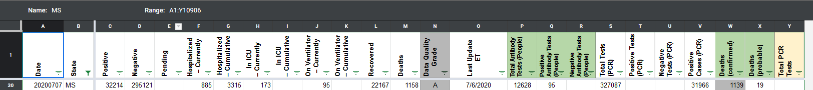
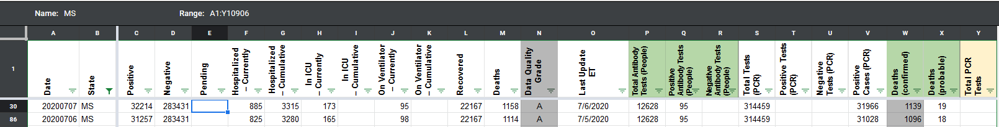

[MS] data entry mistake from 7/8
State or US: MS
Describe the problem In the “Total Tests (PCR)” column, it seems that the last checker recorded the total tests number that lumps PCR and antibody tests instead of recording just the total PCR tests number. I’m changing it to just total PCR tests, so the number is lower. https://covid-tracking.slack.com/archives/CUQ4MMTPD/p1594239073454000?thread_ts=1594238963.452000&cid=CUQ4MMTPD
Link to data source
muamichali added the label Data quality on July 8, 2020 at 1:21 pm
qpmnguyen closed the issue on July 8, 2020 at 2:20 pm
Before:  After:  Since total tests did not change from 7/6 to 7/7, carrying over negatives from 7/6